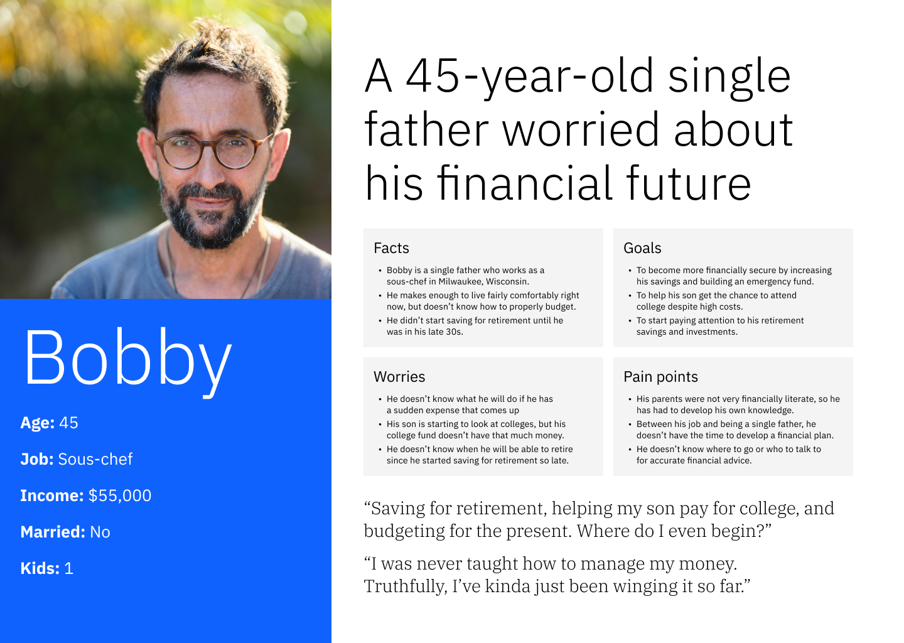
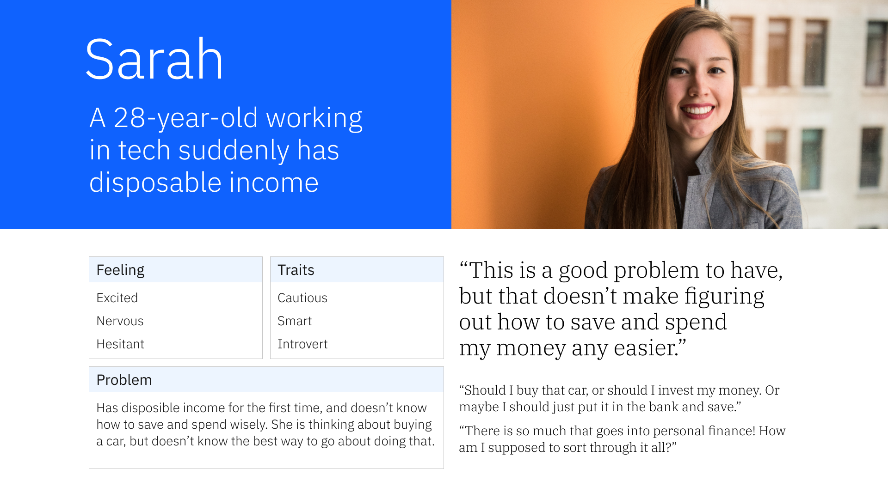
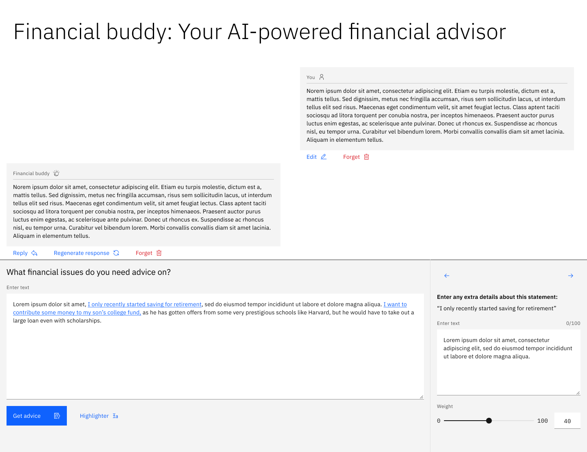

During my IBM internship, I sat in on a workshop with a major financial institution that wanted to explore IBM's generative AI solutions. Many problems and ideas were shared, but one in particular stood out to me: how could generative AI help people who have questions about complex and personal financial situations?
Researching
Talking to an expert
An expert on the banking industry and its users told me there are four main groups of users, but emphasized that there are two that face the biggest challenges:
People between 40 and 50-years-old
These are established professionals with high-school aged kids. They face challenges with wealth accumulation and management, college funds, and saving for retirement.
Young adults with their first job that pays well
This group of people has newly found disposable income, making around $60,000/year. They now need to make choices about how to use this new disposable income responsibly.
Secondary research
Because this wasn't an official client project, I wasn't given any resources to help me in conducting user research, but that didn't stop me from doing research to understand the user groups and potential challenges that they face.
Retirement planning is overwhelming for many
37% of adults surveyed said they have not done any retirement planning, and 76% of that group says that they find planning for retirement overwhelming. A trusted, accessible source of financial information could help this group start to make a plan.
Many young adults turn to social media
One article said that 47% of young adult respondents use Reddit for financial information and advice. This stood out to me because users looking for personal financial advice might appreciate the ability to stay anonymous while fostering personal connections.
Who are the users?
Primary persona
Secondary persona
Ideating
How might I...
Using the information I learned about the potential users and the financial advising and banking industries, I created some statements to focus on user problems.

Forming a team
When a company hackathon was announced, I knew that this project could be taken further. First, I recruited two other designer interns to help with the interface and experience design.
Designing
Initial prototyping
Initial iteration: chatbot screen
User need
People with unique financial situations want advice tailored to their specific needs.
My solution
A chatbot where the user can select specific strings of their prompt to adjust the importance they want assigned to that part of their question.
Why I did this
On social media sites, a person can indicate which parts of their question they deem more important than others by using factors such as the tone of their writing, formatting, and other context clues. While a chatbot can interpret some of these things to an extent, I added this feature to make it easier for the user to give the chatbot relevant information to get a more personalized response.
Initial iteration: goals screen

User need
It can be difficult to set financial goals if you don't know how to best measure success.
My solution
A screen where the user can view the AI-generated financial goals. It also displays relevant resources that the user may find useful in achieving their financial goals.
Why I did this
Because this application would be integrated into a user's bank, the goals could be generated based on the data from their account. Any updates to goal progress would be reflected on this page, taking much of the hassle and guesswork out of the process. The resources could also guide users to the bank's various offerings and services, creating value for both the user and the bank.
Final design
Use the arrows to view the next image. If you can't see the full image, try scrolling on it!
1/4
I removed the ability to set the importance of different parts of the prompt because that would add more uncertainty to the AI response and add extra complexity for the user, who might not even know what parts of their financial situation are important to emphasize. Instead, I kept the overall idea of allowing the user to provide the AI with direction about what they want by giving them checkboxes to check depending on if they want advice on goals, resources, or budgeting.

2/4
In the original design, the chatbot would just return a paragraph. But a long block of text wouldn't really help someone to create financial goals or find resources. In the final design, I added links that the user can click to create a goal, be directed to resources, or set a budget.

3/4
I considered making the create goal modal be a right sidebar instead, but after making that layout I realized that having a right sidebar along with the left sidebar made the interface too crowded. A right sidebar was also unnecessary because the user wouldn't be interacting with the content in the sidebar and the chatbot at the same time. I made this into a modal to help the user focus on the current task of tweaking the goal that they chose.

4/4
One of the other designers made a table view of this dashboard, and we decided to let the user choose whether they wanted a dashboard or tabular view.
Lessons learned
Think about the user and business value
A mentor encouraged me to consider not only the user value, but also the business value.
As a result, I started to think about this project in terms of how improving the financial planning experience of a bank's account holders will ultimately help the bank build customer loyalty and promote bank services.
Work within a design system
By using IBM's design system, Carbon, for this project, I learned best practices for designing experiences using an existing design system. At first, I tended to detach components a lot, which is not the best practice.
As the project went on, I learned the importance of using the existing components properly in order to make the development process smoother and to keep consistency in the design.
Narrow the scope
While the other designers and I did our best to design an interface using best design system practices, we had to significantly narrow the scope of the final developed prototype that we submitted for the hackathon.
Despite this, our design thinking process allowed us to still develop a prototype that can meet user and business needs.